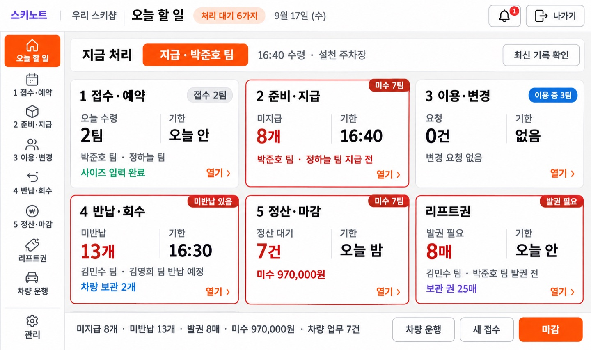
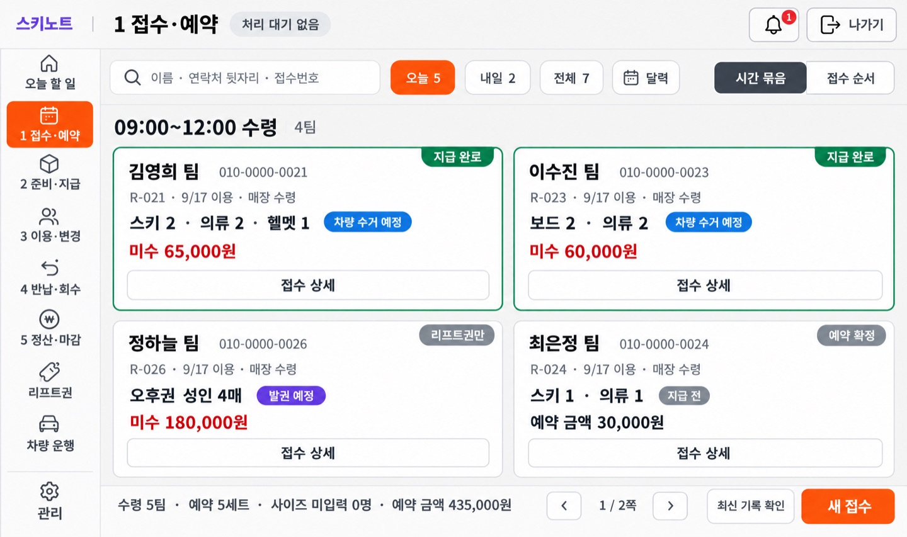
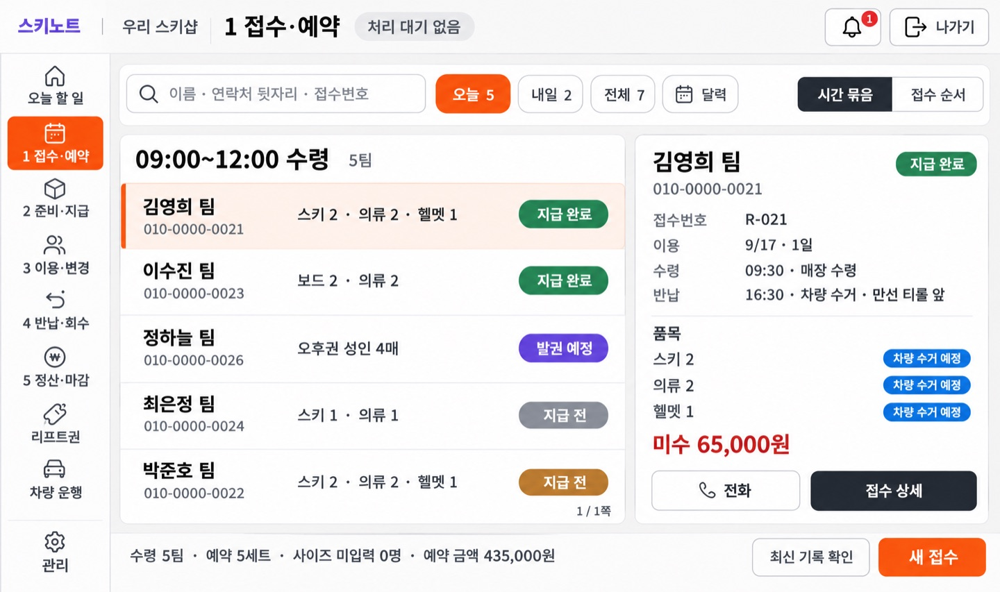
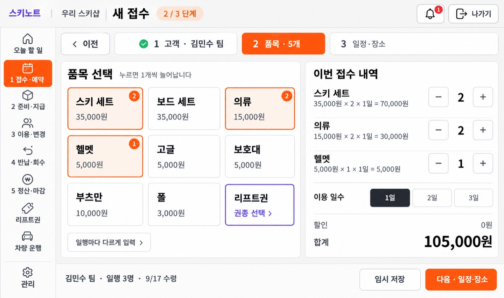
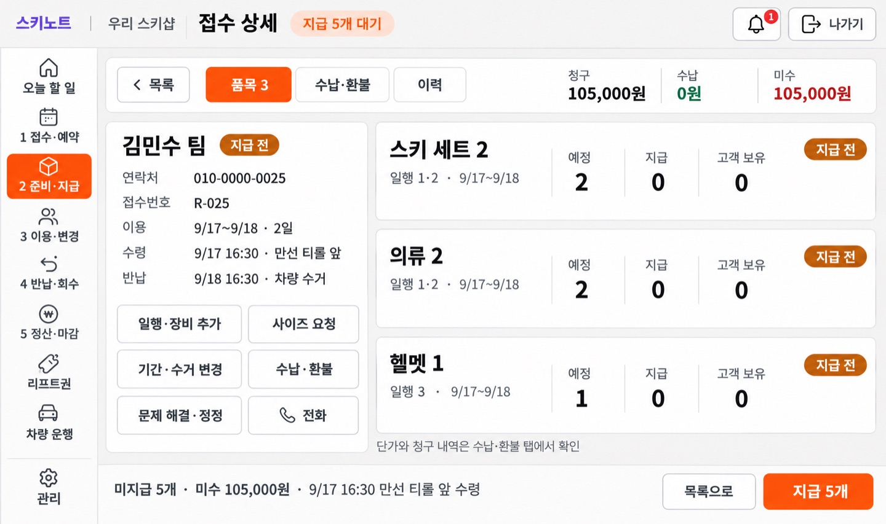
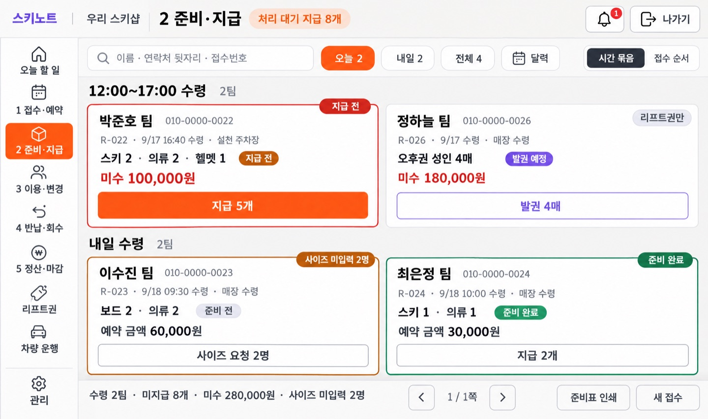
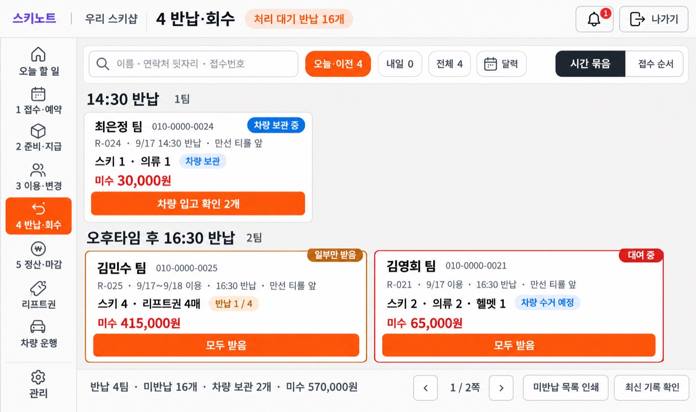
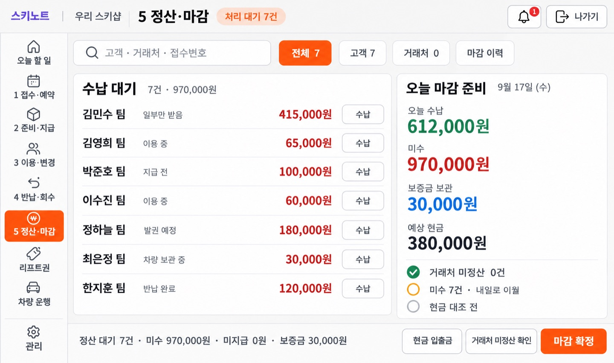
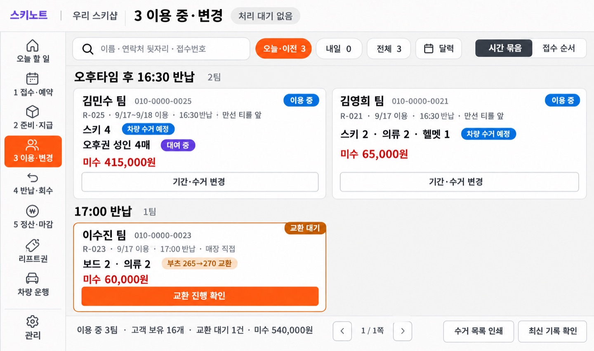

SKINOTE · 힉스필드 POS 메인 시안 1라운드
2026-09-21 · 힉스필드(gpt_image_2_5 · 2k · 27:16)로 그린 POS 메인 화면 시안 9장입니다. 1024×600 화면에서 글자가 잘리지 않고, 스크롤 없이, 큰 글자로 보이게 그렸습니다. 화면을 누르면 크게 볼 수 있습니다(가벼운 미리보기). 원본은 각 화면 아래의 힉스필드 원본 링크와 시안 브랜치(claude/pos-ui-improvement-q9yqku)에 있습니다.
그림으로 만든 시안이라 실제 화면과 다를 수 있습니다. 칩·범례·전화번호 같은 작은 글자는 그림에서 13~15px 정도로 나왔고, 실제 화면을 만들 때는 16px 이상으로 맞춥니다. 고객 이름·전화번호·금액은 예시입니다. 판단 기록은 results.json, 요청 문구는 requests.json, 설명은 docs/38-higgsfield-pos-main-screens.md 에 있습니다.
결정(2026-09-21): 목록 화면은 카드 목록(P02)으로 갑니다. P02A는 비교안입니다. 헤더는 구현할 때 모든 화면에 P01과 똑같이 넣습니다. 실제 글자 크기로 1024×600 · 907×648 · 875×600에서 잘림을 잰 결과는 fit-check 폴더와 docs/38 7절에 있습니다.
같은 템플릿으로 그린 나머지 화면 33장(포스 화면 · 팝업 · 관리 · 기사 태블릿)은 pos-rest-v1에 있습니다. 카드 목록의 확정 배치는 그쪽의 P02R입니다.
P01 · 홈 · 통과(메모) · 재생성 1회오늘 할 일 (홈)
큰 타일 6개(3×2)를 한 화면에 고정했습니다. 맨 위 '지금 처리' 줄에서 가장 급한 일을 바로 엽니다.
판단: 레일 112px에 9개 라벨(아이콘 위·라벨 아래), 6타일 온전, 문구 전부 일치, 말줄임표 0, 주황 버튼 한 종류. 회색 라벨 약 17px·배지 약 17px·본문 약 17px 상당. 메모: 레일 라벨 약 14.5px 상당, 타일 4 아래에 1px 희미한 선.

job 8d6e31bf-6f35-4a6b-bb11-65a3f1ab8ebc · 힉스필드 원본
P02 · 목록 · 통과(메모) · 채택(목록 화면의 기준)1 접수·예약 (카드 목록)
온전한 카드 4장만 보이고, 더 있으면 아래 쪽수(‹ 1 / 2쪽 ›)로 넘깁니다.
판단: 온전한 카드 4장(2×2), 쪽수 1 / 2쪽, 주황은 새 접수 하나. 메모: 헤더에 매장명이 빠짐, 칩·범례 약 13~14px 상당, 하단 '최신 기록 확인' 글자 약 14px 상당.

job 2d623ca4-56c6-4e29-89e5-cd595a8567fc · 힉스필드 원본
P02A · 목록 · 통과(메모) · 비교안(채택 안 함)1 접수·예약 (행 목록 + 상세 패널, 비교안)
P02와 비교할 안입니다. 5팀이 한 화면에 들어가고, 고른 팀의 품목과 다음 할 일이 오른쪽에 나옵니다.
판단: 5행과 오른쪽 상세 패널이 한 화면에 온전히 들어감, 선택 행 표시 분명. 메모: '1 / 1쪽'과 파란 칩이 약 12.5px 상당으로 가장 작다.

job c4d2ef8f-c5fd-40f7-be3f-78b21797a7cb · 힉스필드 원본
P03 · 입력·상세 · 통과새 접수 · 2 품목
큰 품목 버튼을 누르면 1개씩 늘고 −/+ 로 고칩니다. 합계는 오른쪽 아래에 늘 보입니다.
판단: 품목 버튼 3×3, 선택 수량 배지, −/+ 스테퍼, 이용 일수, 합계 105,000원까지 문구 일치. 메모: 안내문과 '일행마다 다르게 입력' 약 14px 상당.

job 445bec0f-9886-44fe-a4d1-026da637667b · 힉스필드 원본
P04 · 입력·상세 · 통과 · 재생성 1회접수 상세
왼쪽에 팀 요약과 버튼 6개, 오른쪽에 품목 3줄이 잘리지 않고 들어갑니다.
판단: 레일 9개 순서 정상(활성은 위에서 셋째 '2 준비·지급'). 왼쪽 요약+버튼 6개, 오른쪽 품목 행 카드 3개가 잘림 없이 들어감, 주황은 '지급 5개' 하나. 메모: 회색 라벨·안내 줄 약 15px 상당.

job 1cc53988-9bfe-4a98-be82-ab1dc3f55b81 · 힉스필드 원본
P05 · 목록 · 통과(메모) · 재생성 1회2 준비·지급
카드마다 다음 할 일 버튼이 하나씩 있습니다(지급 · 발권 · 사이즈 요청).
판단: 레일 9개 순서 정상. 묶음 제목 2개와 카드 4장 온전, 카드마다 버튼 하나(지급 5개만 주황, 발권은 보라 테두리), 하단에 주황 없음. 메모: 칩 약 14px·전화번호 약 14px 상당.

job 854409ed-dbfb-4dae-aca6-d2b6275c716b · 힉스필드 원본
P06 · 목록 · 통과(메모)4 반납·회수
반납 시간대별로 묶고, '차량 입고 확인'과 '모두 받음'을 카드 버튼으로 나눴습니다.
판단: 반납 타임 2묶음, 카드 3장 온전, 카드 버튼으로 '차량 입고 확인'과 '모두 받음' 구분, 하단에 주황 없음. 메모: 첫 줄 카드 폭이 아랫줄 카드보다 좁다, 전화번호 약 13px·하단 버튼 약 14.5px 상당.

job 98eab95c-d419-4f7e-953e-9108c8164840 · 힉스필드 원본
P07 · 정산 · 통과(메모)5 정산·마감
수납 대기 7건이 스크롤 없이 한 번에 보이고, 오른쪽에 오늘 마감 준비 숫자가 있습니다.
판단: 수납 대기 7행이 스크롤 없이 모두 보이고 오른쪽 '오늘 마감 준비' 숫자 4개와 확인 3줄, 주황은 마감 확정 하나. 메모: 행 메모·'수납' 버튼 약 14px, '거래처 미정산 확인' 버튼 글자 약 14px 상당.

job 2246226f-da6f-4c88-928c-3c6d9bfa1418 · 힉스필드 원본
P08 · 목록 · 통과(메모)3 이용 중·변경
이용 중인 팀의 기간·수거 변경과 교환 대기를 봅니다. 주황 버튼은 교환 대기 카드에만 있습니다.
판단: 카드 3장 온전, 주황은 교환 대기 카드의 '교환 진행 확인'에만. 메모: 헤더 오른쪽 알림 종과 나가기 버튼이 빠짐(내용 판단에는 영향이 없어 재생성하지 않음), 칩·전화번호 약 13px 상당.

job ddcf2620-1720-4054-ae9a-517083392c5d · 힉스필드 원본